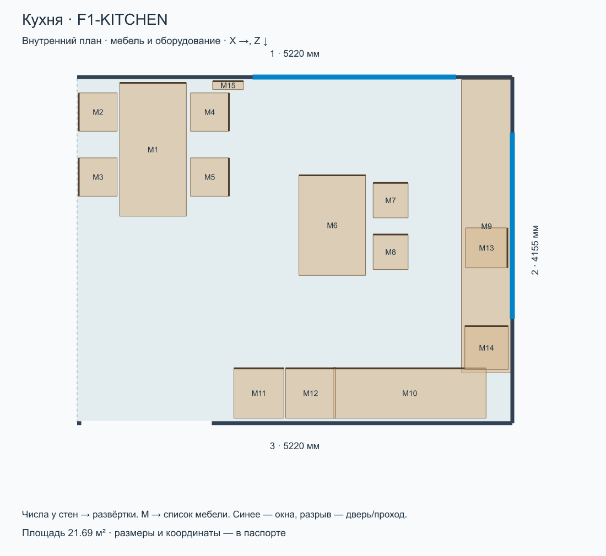
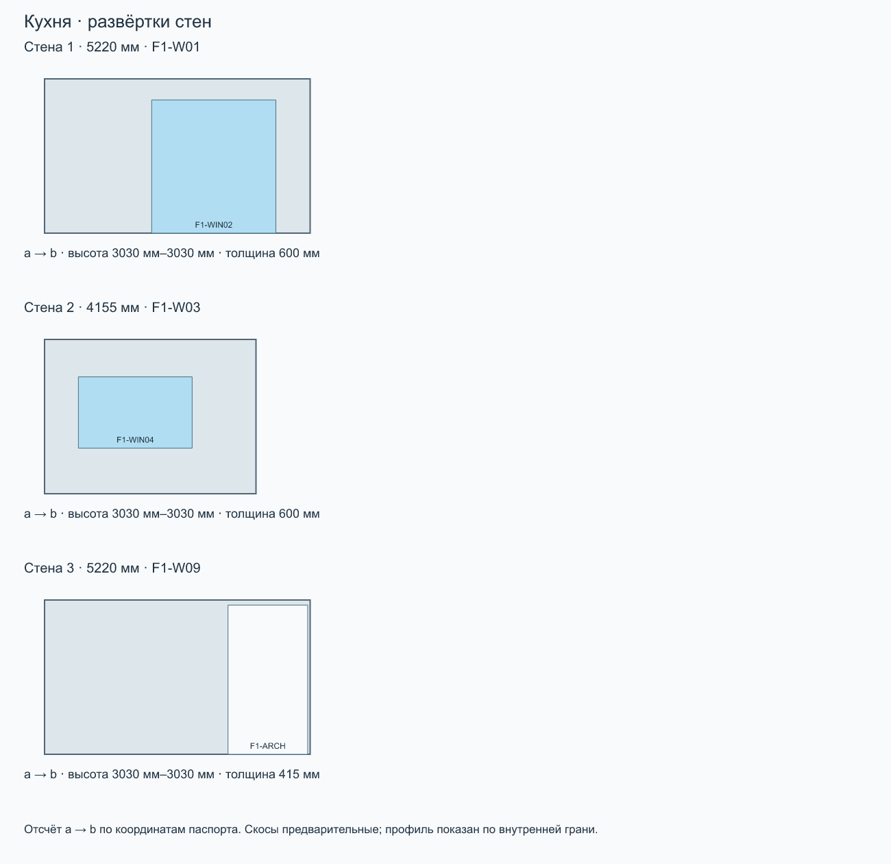

Кухня
Этаж 1 · площадь 21.69 м² · максимальная высота 3030 мм · отметка пола 0 мм.
F1-KITCHEN · 2026-09-10-electrical-layerСкачать комплект для ИИПаспорт JSONОписание MarkdownЗапрос TXT
Дайте чату ссылку на эту страницу. Если изображения не открываются, распакуйте ZIP и приложите PNG и паспорт к сообщению.
Готовый запрос
Комната: Кухня (F1-KITCHEN). Ревизия: 2026-09-10-electrical-layer. Используй комплект комнаты как основу для визуализации интерьера. Сначала прочитай паспорт и посмотри план, все 3D-виды и развёртки. Сохрани внутренний контур, высоты, скосы, размеры и положение окон, дверей, мебели и оборудования. Меняй отделку, цвета, материалы и освещение в стиле [УКАЖИ СТИЛЬ]. Не добавляй проёмы, перегородки или мебель, не переставляй предметы без моего запроса. Отсутствующие на обзорном ракурсе стены и потолок скрыты для обзора: восстанови их по паспорту и развёрткам. Не интерпретируй направления X/Z как стороны света. Условные размеры не называй подтверждёнными обмерами. Если файлы или изображения недоступны, попроси приложить комплект, а не придумывай геометрию. Перед генерацией кратко перечисли прочитанные файлы и ограничения комнаты. Генерация изображения — визуальная концепция; точность проверяется по модели.
Геометрия комнаты

{kind=link}
{kind=link}
{kind=link}
{kind=link}
Развёртки

Стены
| № | a → b: X, Z | Длина | ID модели |
|---|---|---|---|
| 1 | 3490 мм, 0 мм → 8710 мм, 0 мм | 5220 мм | F1-W01 |
| 2 | 8710 мм, 0 мм → 8710 мм, 4155 мм | 4155 мм | F1-W03 |
| 3 | 8710 мм, 4155 мм → 3490 мм, 4155 мм | 5220 мм | F1-W09 |
Окна, двери и проходы
| Стена | ID | Тип | Ширина × высота | Отступ от a | Низ от пола |
|---|---|---|---|---|---|
| 1 | F1-WIN02 | window | 2440 мм × 2615 мм | 2105 мм | 0 мм |
| 2 | F1-WIN04 | window | 2235 мм × 1400 мм | 665 мм | 895 мм |
| 3 | F1-ARCH | passage | 1565 мм × 2930 мм | 3605 мм | 0 мм |
Мебель и оборудование
| На плане | ID | Тип | Ш × В × Г | Центр X, Z | Поворот | Низ от пола |
|---|---|---|---|---|---|---|
| M1 | F1-FUR-DINING | table | 800 мм × 760 мм × 1600 мм | 4400 мм, 870 мм | 0° | 0 мм |
| M2 | F1-FUR-DINING-CHAIR-1 | chair | 460 мм × 840 мм × 460 мм | 3740 мм, 420 мм | -90° | 0 мм |
| M3 | F1-FUR-DINING-CHAIR-2 | chair | 460 мм × 840 мм × 460 мм | 3740 мм, 1200 мм | -90° | 0 мм |
| M4 | F1-FUR-DINING-CHAIR-3 | chair | 460 мм × 840 мм × 460 мм | 5080 мм, 420 мм | 90° | 0 мм |
| M5 | F1-FUR-DINING-CHAIR-4 | chair | 460 мм × 840 мм × 460 мм | 5080 мм, 1200 мм | 90° | 0 мм |
| M6 | F1-FUR-ISLAND | kitchen | 800 мм × 920 мм × 1200 мм | 6550 мм, 1780 мм | 0° | 0 мм |
| M7 | F1-FUR-STOOL-1 | stool | 420 мм × 650 мм × 420 мм | 7250 мм, 1480 мм | 0° | 0 мм |
| M8 | F1-FUR-STOOL-2 | stool | 420 мм × 650 мм × 420 мм | 7250 мм, 2100 мм | 0° | 0 мм |
| M9 | F1-FUR-KITCHEN-RUN | kitchen | 3520 мм × 900 мм × 600 мм | 8400 мм, 1790 мм | 90° | 0 мм |
| M10 | F1-FUR-KITCHEN-RETURN | kitchen | 1830 мм × 900 мм × 600 мм | 7480 мм, 3795 мм | 0° | 0 мм |
| M11 | F1-FUR-FRIDGE | fridge | 600 мм × 2050 мм × 600 мм | 5670 мм, 3795 мм | 0° | 0 мм |
| M12 | F1-FUR-OVEN | oven | 600 мм × 2050 мм × 600 мм | 6290 мм, 3795 мм | 0° | 0 мм |
| M13 | F1-FUR-SINK | sink | 480 мм × 980 мм × 500 мм | 8400 мм, 2050 мм | 90° | 0 мм |
| M14 | F1-FUR-HOB | hob | 520 мм × 930 мм × 520 мм | 8400 мм, 3250 мм | 0° | 0 мм |
| M15 | F1-RAD02 | radiator-tubular | 370 мм × 1800 мм × 100 мм | 5300 мм, 100 мм | 0° | 100 мм |
Что учитывать
- План — внутренний контур. Номер стены соответствует развёртке; a→b задаёт направление отсчёта проёмов.
- Проёмы faces.openings: start от a внутренней грани, sill от пола комнаты. Не путать с осевыми start в исходной модели.
- Мебель: position=[X,Z] — центр, size=[ширина,высота,глубина], rotation — градусы по часовой стрелке на плане, resolvedElevation — низ от пола комнаты.
- Профили высот дискретизированы по внутренней грани стены (100 интервалов); точная геометрия — buildHouse/GLB. Скосы предварительные.
- 3D-виды — ортографические схемы из модели. Потолок и ближние стены скрыты только для обзора. Цвета условные.
- Граница комнаты без номера стены — открытое сопряжение, а не новая перегородка. Дверные полотна и направления открывания не заданы.
Расстановка по листам 8–9 (страницы PDF 9–10), адаптирована к текущим внутренним граням RoomPlan без изменения здания. position=[X,Z] — центр; size=[ширина,высота,глубина] в локальных осях, rotation — градусы по часовой стрелке на плане. Размеры с подписями перенесены по плану; прочие габариты, высоты, материалы и детализация условные. Высокие шкафы у скосов понижены. Диваны показаны сложенными. Сантехника входит в слой. В прихожей исходные консоль и пуф удалены, добавлен условный встроенный шкаф в левой нише; в кабинете шкаф у прохода удалён, дальний шкаф расширен до стены, а стол объединён с подоконником по фото; в ванной добавлен полотенцесушитель на левой стене; в гараж добавлен условный стеллаж для инструментов в нише; бойлерная остаётся без расстановки. Уточнение владельца 10.09.2026: гардеробная П-образная, столик удалён; в F2-ROOM добавлены полки от входа до шкафа; шкаф детской удлинён до 2,70 м; кресла гостиной и F2-ROOM развёрнуты в комнату и отодвинуты от торшеров. Новые размеры мебели условные.
Исходные допущения модели
[
{
"id": "ceiling",
"title": "Высота второго этажа",
"text": "Базовые высоты по RoomPlan review 08.09.2026: первый этаж 3,03 м (медиана однозначных высоких стен), высокая часть второго 3,045 м (медиана детской, комнаты, спальни и ванной). Смешанный коридор/лестница и локальные низкие участки не использованы для общей отметки. Старые 3,22 м и 2,97 м заменены этим решением владельца; technicalUpperHeight 3,45 м сохраняется только для расчёта скатов."
},
{
"id": "slope",
"title": "Скошенные потолки",
"text": "Низкие точки по RoomPlan: слева 1,925 м (детская 1,908 и комната 1,942), справа 1,960 м (спальня 1,928 и ванная 1,996), в нижней комнате справа 1,940 м (скан 1,942). Смешанные коридор/лестница исключены из высотного усреднения. Уклон сохранён близким прежнему; длины скатов пересчитаны. Линии перехода к высокой части остаются расчётными, скан не задаёт плоскости скатов."
},
{
"id": "slab",
"title": "Перекрытие",
"text": "Толщина 0,22 м принята условно. Отметка пола второго этажа +3,25 м = 3,03 + 0,22. Изменяется в параметрах."
},
{
"id": "stairs",
"title": "Лестница",
"text": "Фото IMG_6630/6631: бетонная П-образная лестница с плоской поворотной площадкой и сплошной перегородкой. Владелец подтвердил 10 проступей до площадки и 9 после неё, не включая площадку и пол. Это 21 подъём на принятую отметку +3,25 м, по 154,8 мм. Размер площадки 1,15 м, распределение длины маршей и толщина бетона пока восстановлены по планам и фото. Перегородка между маршами — 0,13 м по ручному контролю и торцу в скане; верхний марш шириной 0,91 м, пол кладовой начинается за перегородкой на Z=5,76 м. Положение проёма и 21 подъём сохранены. Уточнение владельца 09.09.2026, фото IMG_6631 2.HEIC: ограждения второго этажа пока нет; перегородка закрывает только нижний марш и заканчивается под верхним маршем. Её верх следует нижней поверхности бетона; точный профиль и толщина бетона остаются допущением."
},
{
"id": "walls",
"title": "Сведение обмеров",
"text": "Ручные толщины 415/405/130 мм сохранены. Стены и полигоны комнат согласованы по RoomPlan; стык F2-W15/F2-W06 замкнут. Неподтверждённые толщины сохранены, кроме F2-W06: 0.265 м по совместной привязке поверхностей, требует контрольного обмера."
},
{
"id": "openings",
"title": "Окна и двери",
"text": "Положение проёмов восстановлено по черновому плану, высоты окон — технический проект, стр. 4–5. Положение и высота некоторых проёмов оценены по развёрткам. Дверные полотна не моделируются; проёмы оставлены открытыми. Проёмы одного подтверждённого типа должны иметь одинаковые чистые ширину и высоту, прежде всего высоту. Разные типы не объединяются автоматически. По решению владельца F1-WIN04, F1-WIN05 и F2-WIN04 имеют общую высоту 1,400 м; ширины и низы оставлены индивидуальными."
},
{
"id": "envelope",
"title": "Границы модели",
"text": "Помещения дома и гаража, стены, перекрытия, открытые проёмы, лестница и потолки. Гараж пристроен к выходу из бойлерной. Ворота показаны открытым проёмом, как на фото; механизм и полотно не проектировались. Наружная кровля дома, терраса, балкон и фундамент не восстановлены. Мебели нет."
},
{
"id": "garage-dimensions",
"title": "Обмеры гаража",
"text": "Габариты и высота гаража по RoomPlan, принятому владельцем при review 08.09.2026: ширина около 6,36 м, боковые стены 6,38 / 7,13 м, проём ворот 4,74 м, основные стены 2,927 м. Участок 2,670 м сохранён как локальный перепад. Высота ворот 2,70 м сохранена отдельно: RoomPlan не распознал ворота как поверхность."
},
{
"id": "garage-connection",
"title": "Привязка и отметка гаража",
"text": "Гараж перенесён целиком вместе со стеной бойлерной: -0.145 м по X и -0.125 м по Z. Сканы задают его относительную форму, абсолютная привязка условная. Выступ выровнен по наружной грани дома X=9.31 м. Пол −0,35 м, толщина стен 0,30 м и плиты 0,18 м остаются допущениями."
},
{
"id": "roomplan-heights",
"title": "Высоты по RoomPlan",
"text": "По решению владельца 08.09.2026 значения высот принимаются из сканов. Общие отметки сведены медианой независимых однозначных комнат; низкие участки стен, скаты и смешанные области не усредняются с высокими стенами. Шесть однозначно сопоставленных окон обновлены; F2-WIN04 оставлен с текущими параметрами по решению владельца, а ворота без отдельной поверхности сохранены как KEPT."
},
{
"id": "scan-fit",
"title": "Согласование сканов 09.09.2026",
"text": "Размеры помещений согласованы общей системой координат с округлением измеряемых размеров до 5 мм. Оси стен толщиной 405/415 мм могут попадать на 2,5 мм. Толщина F2-W06 выведена из совместной привязки ванной и комнаты и остаётся расчётным допущением. Сканы расходятся на несколько сантиметров; неподтверждённые двери и высотная привязка лестничного окна сохранены. Гараж перенесён целиком вместе с общей стеной без изменения измеренной формы."
},
{
"id": "furniture-step6",
"title": "Мебель по step6_ver3.pdf",
"text": "Расстановка по листам 8–9 (страницы PDF 9–10), адаптирована к текущим внутренним граням RoomPlan без изменения здания. position=[X,Z] — центр; size=[ширина,высота,глубина] в локальных осях, rotation — градусы по часовой стрелке на плане. Размеры с подписями перенесены по плану; прочие габариты, высоты, материалы и детализация условные. Высокие шкафы у скосов понижены. Диваны показаны сложенными. Сантехника входит в слой. В гараже и бойлерной расстановка не задана. Шкаф нижней комнаты второго этажа укорочен с 2,50 до 2,35 м из-за уточнённого уступа. Отдельные навесные полки, зеркала, верхние шкафы и декоративные детали пока не детализированы. Это объёмная расстановка, не рабочие чертежи мебели."
},
{
"id": "heating-p62",
"title": "Радиаторы · П-62 Отопление финал.pdf",
"text": "Радиаторы из проекта отопления добавлены в отдельный слой оборудования. Строительная геометрия и отметка второго этажа сохранены по RoomPlan; старые размеры здания и +3,440 из PDF не применялись. Привязки к окнам перенесены на текущие проёмы. В гараже оба панельных радиатора перенесены на одну длинную внутреннюю стену ближе к входу из дома, симметрично относительно центра стены и на одном уровне. Высота BASE 500/18 540 мм по разрезу требует подтверждения; глубина TUBOG/CV22 условная. Трубы и коллекторы не моделируются. Кресло и приставной столик гостиной сдвинуты вправо на 160 мм, рабочий стол F2-ROOM — от окна на 160 мм для устранения пересечений."
},
{
"id": "air-conditioning-step6",
"title": "Кондиционеры · step6_ver3.pdf",
"text": "Пять внутренних блоков по планам кондиционирования (листы 30–31). Ширина 750 мм по развёрткам; высота 300 мм и глубина 200 мм условные, модель оборудования не выбрана. Верх корпуса на 290 мм ниже текущего чернового потолка; у скосов берётся минимальная высота над всем корпусом. Монтажные отметки вычисляются при изменении высот дома. Места и дренаж в самом PDF помечены для уточнения поставщиком; наружные блоки и трассы не заданы и не моделируются. Упоминание кондиционера на развёртке кухни (стр.39) противоречит плану и показано у пола: дополнительным блоком не считалось."
}
]d48c66d8b73d4ce156ca1604a086feba42e80d3b62dfe9c58db21eca0daff0e9